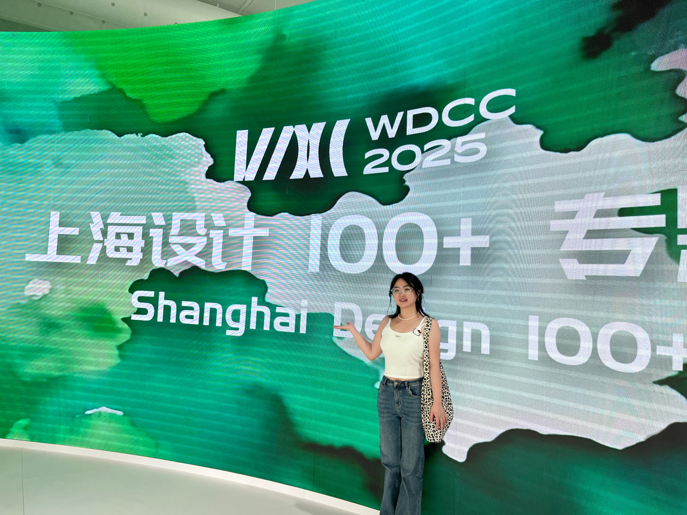
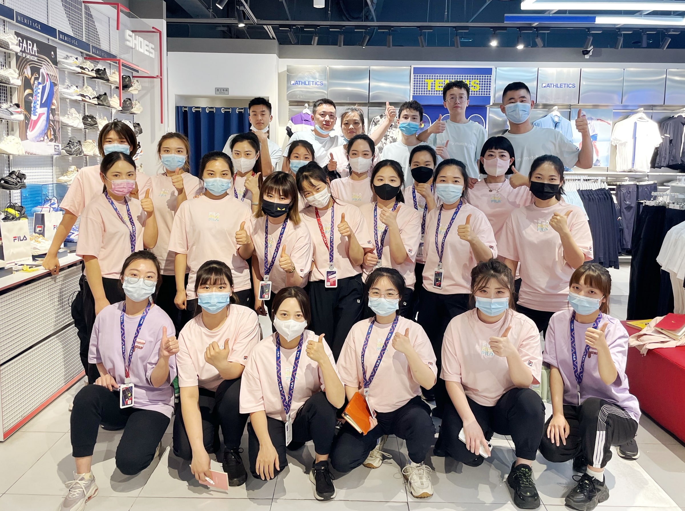

ABOUT ME / 张劲秋
HEY, IT’S
JEANIECHOO
很高兴认识你
滑雪、徒步、攀岩、健身、看展……保持好奇，认真感受生活，也把这份热情带进每一次项目中。
关于我
A LITTLE ABOUT ME
产品思维
能够从用户场景出发识别需求，结合调研发现与业务反馈拆解问题，提出功能及体验方案。
协作沟通
具备校企项目、活动组织经验，能够整理多方意见，协调任务安排并跟进执行。
商业意识
具备销售数据与顾客偏好分析经验，能够结合用户需求和经营反馈思考产品方案。
掌握工具
熟练使用 Figma 等原型开发软件，熟练使用 Excel 整理与分析数据，精通 Rhino、KeyShot 等模型软件，具备 Vibe Coding 协同开发经验。

Always curious
从形态与审美
到产品与系统。
跨学科的学习，让我在感性表达之外，建立研究、规划与系统思考的能力。
2025.09 — 2028.07上海第二工业大学
产品与系统化设计 · 硕士研究生
用户研究与产品设计应用系统化产品设计策划与实施人机工程学与产品设计应用服务设计设计方法论设计心理学
2017.09 — 2021.07西南大学
服装与服饰设计 · 本科
6 项国家级设计奖项
国青杯 · 中国创意设计年鉴 · 米兰设计周 · 未来设计师等
校三等奖学金
Understand people. Understand business.
理解顾客的选择，
让洞察连接商业。

斐乐服饰有限公司 · 副店长
2021.07 — 2023.02
结合销售数据与顾客偏好，调整货品与陈列，拆解经营目标。
统筹排班、岗位配置与新人培训，推进标准流程和日常运营。
10 万元+任职期间，所在门店单日最高销售额
创店铺历史新高
顾客洞察 / 数据分析 / 团队管理 / 执行推进
USER RESEARCH / PRODUCT DESIGN / COLLABORATION / CREATIVE THINKING / USER RESEARCH / PRODUCT DESIGN /
2026.05 / 志愿者 · 活动策划
TEDx 武康路
TEDx 是获得 TED 授权、由本地团队独立组织的思想分享活动。
让人与想法，在现场相遇。
以志愿者身份参与 130 人活动的体验规划，梳理报名、签到、入场与座席流程。设计“红黄蓝”分区签到与分流机制，规划现场动线、导视和功能分区。
统筹多机位拍摄与素材调度，结合品牌调性制作小红书、公众号内容。在多方协作中，连接流程、资源与表达。
体验规划 · 现场统筹 · 内容制作From insight to reality
我能做什么？
从发现问题，到设计表达，再到落地协作。
卡片正面：JeanieChoo 的姓名、个人照片、独立设计师及产品系统与设计研究文字。背面：Curious. Thoughtful. Creative.，中间为银色立体徽标，下方保留个人介绍和 JeanieChoo 签名。